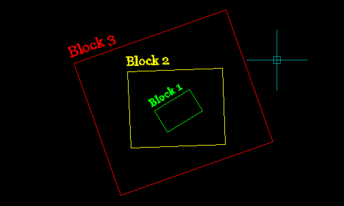
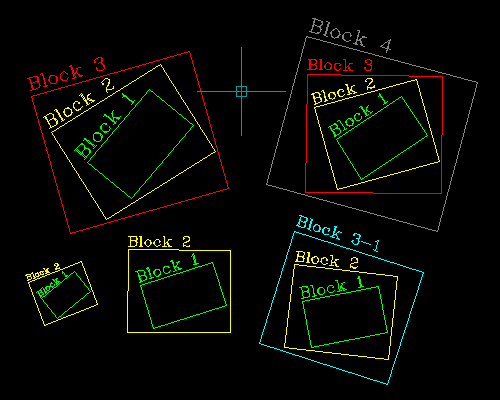

Extract Nested Block
This page is delivered for consistency purposes only, as part of the LeeMac sample module of DynALisp, which shows how DynALisp turns existing AutoLISP programs into a module. The program and its description are the work of Lee Mac, who keeps all the credit for them. The original page, with the latest version, is on Lee Mac's website: https://lee-mac.com/extractnestedblock.html
(Convert Nested Block to Primary Block)
| Function Syntax | LM-ExtractNestedBlock – original syntax: ENB (see aliases) |
| Current Version | 1.2 |
| Compatible with AutoCAD for Mac? | No |
| Compatible with AutoCAD LT? | Yes |
| This program is also available at the Autodesk Exchange App Store | |
| Original Page | lee-mac.com/extractnestedblock.html |
Program Description
This program allows the user to convert a nested block into a primary block inserted at the same position for each reference of the nested block, retaining the same scale, rotation, orientation and all other properties possessed by the original nested block.
Following selection of a nested block, the program will convert all references of the nested block and then proceed to remove the nested block from the primary block definition in which it resides.
The program is compatible with uniformly-scaled nested standard blocks, nested dynamic blocks & nested xrefs, nested to any depth, and will process all references of the nested block, even those for which the parent block is also nested within another reference, as the various examples below demonstrate.
The program is unfortunately incompatible with blocks nested within dynamic blocks or xrefs, and the program will ignore non-uniformly-scaled block references.
Examples
Example 1
In the following demonstration, Block1 (green) is nested within Block2 (yellow), which is nested within Block3 (red). To make things a little more complex, at each level of the nesting, the references have been scaled and rotated.

Example 2
In this second example, Block1 (green) is nested within Block2 (yellow), which is nested within Block3 (red) and also nested within Block3-1 (cyan). A reference of Block3 (red) is also nested within Block4 (grey). Again, at each level of the nesting, the references have been scaled and rotated.

Bundled program notes
;;---------------------=={ Extract Nested Block }==---------------------;;
;; ;;
;; This program allows the user to convert a nested block into a ;;
;; primary block inserted at the same position for each reference of ;;
;; the nested block, retaining the same scale, rotation, orientation ;;
;; and all other properties possessed by the original nested block. ;;
;; ;;
;; Upon selection of a nested block, the program will convert all ;;
;; references of the nested block and then proceed to remove the ;;
;; nested block from the primary block definition in which it resides. ;;
;; ;;
;; The program is compatible with uniformly-scaled nested standard ;;
;; blocks, nested dynamic blocks & nested xrefs, nested to any depth. ;;
;; ;;
;; However, the program is incompatible with blocks nested within ;;
;; dynamic blocks or xrefs, and the program will ignore ;;
;; non-uniformly-scaled block references. ;;
;; ;;
;;----------------------------------------------------------------------;;
;; Author: Lee Mac, Copyright © 2013 - www.lee-mac.com ;;
;;----------------------------------------------------------------------;;
;; Version 1.0 - 04-04-2012 ;;
;; ;;
;; - First release. ;;
;;----------------------------------------------------------------------;;
;; Version 1.1 - 09-09-2013 ;;
;; ;;
;; - Program modified to prohibit selection of nested blocks residing ;;
;; on locked layers or blocks nested within dynamic blocks or xrefs. ;;
;; ;;
;; - Program will now ignore non-uniformly scaled block references ;;
;; without returning an error. ;;
;;----------------------------------------------------------------------;;
;; Version 1.2 - 19-05-2020 ;;
;; ;;
;; - Fixed bug causing program to crash during the process of ;;
;; obtaining all references of the parent block when encountering ;;
;; a block reference with an (102 . "{ACAD_REACTORS") entry pointing ;;
;; to an associative dimension (DIMASSOC entity). ;;
;;----------------------------------------------------------------------;;
Command Names And Aliases
As in every DynALisp module, each program of this sample module has one main command, named LM-*, and the original command names of Lee Mac's page are kept as its aliases: they run the same command, and can be added, renamed or removed in Dyl-Suite (saved in Resources\Aliases.csv).
| Command | Aliases | Name |
|---|---|---|
| LM-ExtractNestedBlock | ENB | Extract Nested Block |